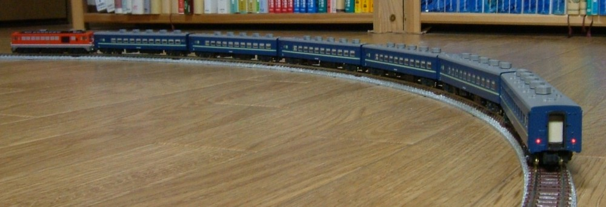
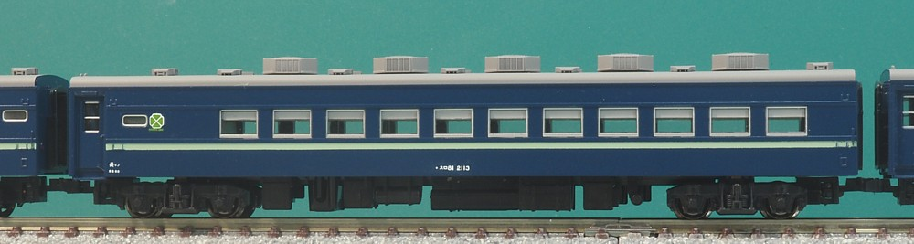
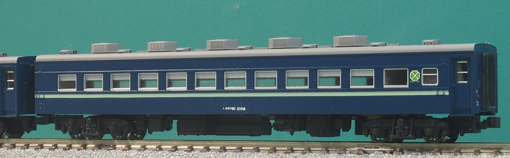
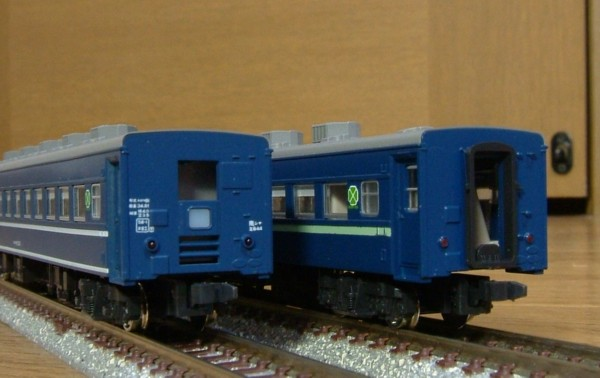
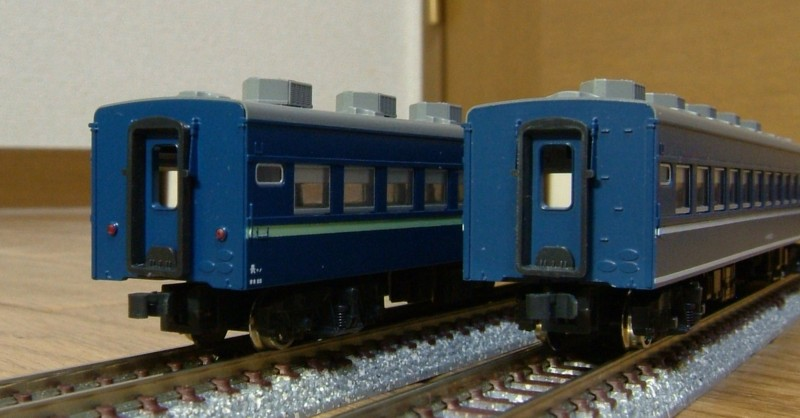
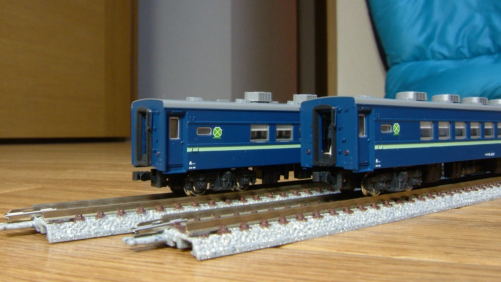
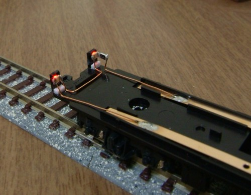
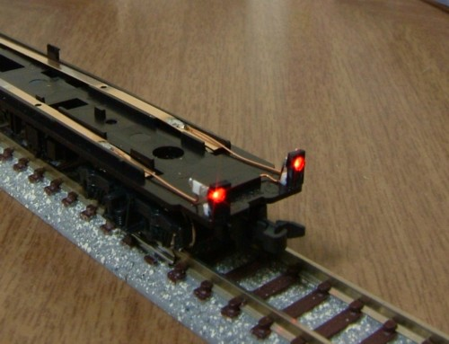
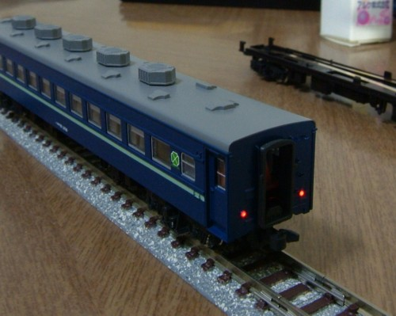
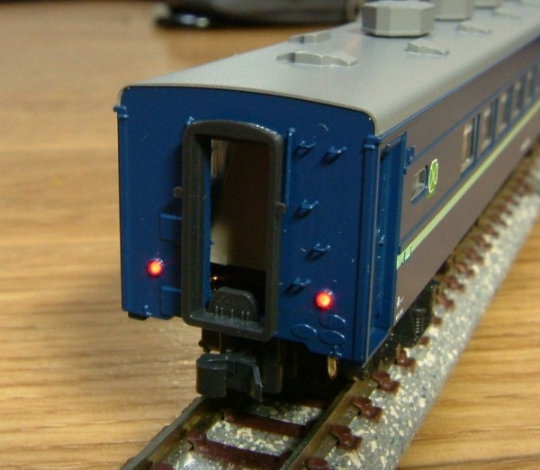

KATOスロ81系を軽加工の上、塗りなおしました。 6両一組のお座敷客車で、全国で7編成がデビューしています。ずらりと並ぶ緑帯がたまりません。 こんなのに乗ってお酒飲みながら旅行したかったですね。 番号は長野局のものをつけていますが、あくまで雰囲気で特定番号ではありません。


スロ62の室内を畳敷きに改造して生まれた車両です。 外観はほぼスロ62まんまなんですが、窓に障子が取り付けられました。 2箇所あったトイレ・洗面所のうち非デッキ側は撤去され、窓が埋められています。
模型はKATOのスロ81の塗り替え。 屋根はスロ62のグレードアップパーツに交換し、ベンチレーターは別パーツになってます。

緩急車です。旧型客車ですのでスロ81"系"というのは若干抵抗があるのですが、 こちらはほぼスロフ62です。 実車の改造内容はスロ62→スロフ62同様。
こちらも屋根はスロ62のグレードアップパーツに交換。6両ともやってます。 この車両も含め、車輪をスポーク車輪に交換してたりと 改造当初からいろいろとグレードアップしました。

「普通のスロフ81」にしたかったので、妻面はテールサインと配電盤を削り取り、貫通幌を設置しました。 例によって手すりは植え込み化。 出目金&寄り目テールライトは削り取り、やや外側に銀河のパーツをつけなおしています。
塗装は剥離のうえで塗りなおしています。 最近は塗装剥離をやらなくなりましたが(面倒)、当時はブームでした。 青15号・淡緑6号ともにモリタで、元の塗装を剥がした上で淡緑→青の順に塗装しています。

非デッキ側妻面です。 資料が皆無だったため、スロフ62を参考に作りました。 余計なステップを削除して、テールライトを取り付けます。テールライトは、 汚物処理装置の点検蓋(?)を避けるために高い位置に設置されています。 点検蓋はスジ彫りで表現したいところでしたが、自信がなくて省略しました。




